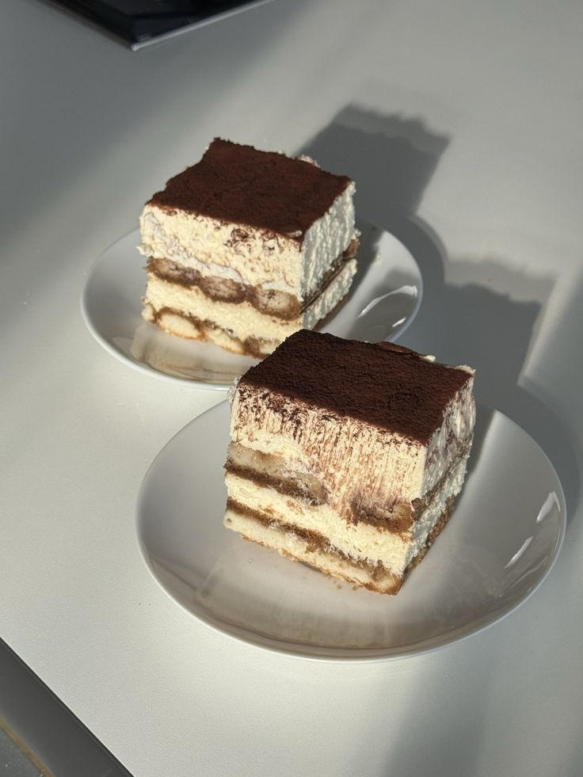

Difficulty - Medium
Total Time - 4 hrs (including chilling)
INGREDIENTS :
- 250g mascarpone cheese
- 3 eggs, separated
- 1/2 cup sugar
- 1 cup strong brewed coffee
- 2 tbsp coffee liqueur (optional)
- 200g ladyfinger biscuits
- 2 tbsp cocoa powder
INSTRUCTIONS :
- Brew coffee and let it cool. Add liqueur if using.
- Beat egg yolks with sugar until pale and creamy.
- Fold in mascarpone cheese until smooth.
- Whisk egg whites until stiff peaks form, then gently fold into mascarpone mixture.
- Dip ladyfingers quickly into coffee and layer in a dish.
- Spread mascarpone mixture over the layer. Repeat with another layer of biscuits and cream.
- Dust with cocoa powder.
- Refrigerate for at least 3–4 hours before serving.